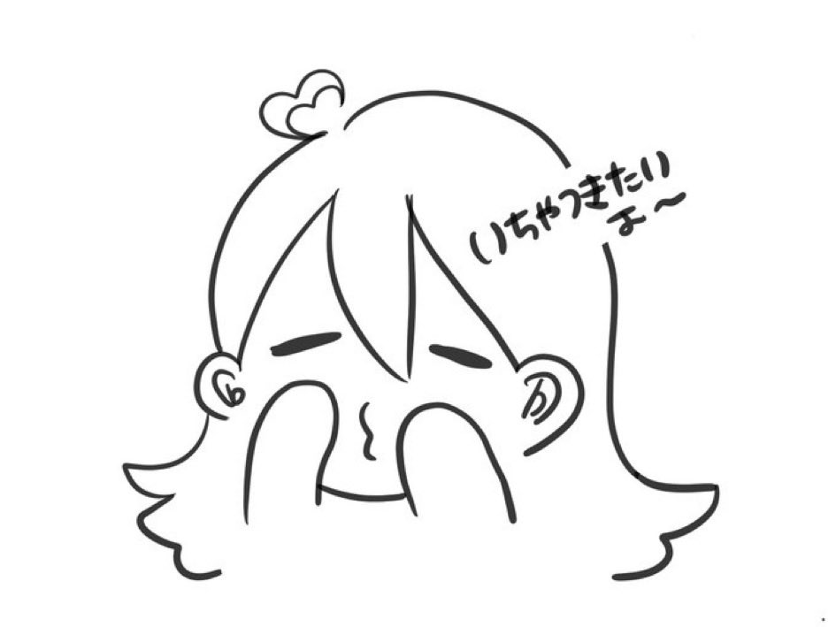

アンケート
れいさんのファンの方に聞いてみたかったことをアンケートにしました。よかったら、気軽に答えてもらえるとうれしいです。
※フォーム公開期間は、サイト公開から1週間を予定しています。
※フォームの公開は日本時間の7/4 24:00までとさせていただきます。
▶ アンケートフォームはこちら（ログイン不要です）
※募集は終了しました。ご協力ありがとうございました！
Q1.れいさんは “いい人” だと思う？
.png)
Q2. れいさんは かわいい？ かっこいい？
.png)
Q3.「生意気な後輩シリーズ」で特に好きなのは？
.png)
- 会社の女上司を落としたい後輩の女の子（一人でしたりするんですか？）
- 生意気な後輩が電話で甘えてくる（飲み会に先輩が来なくて拗ねて電話）
- 嫉妬深い後輩と天然な先輩（デートに誘われた相談に嫉妬＋おまけ）
- 生意気な後輩といちゃいちゃ（吐息、リップ音注意）
- 生意気な後輩が先輩にいじわるしちゃう（同僚ってそういうもん）
- 嫉妬して怒った後輩から電話（同じ部署の後輩の子を泊めた先輩に嫉妬）
- 先輩を眠らせて縛っちゃった生意気な後輩の独り言
- 生意気な後輩と先輩で宅飲み（デートして、ちゅーして、次は？）
- 後輩ちゃんが先輩と電話でいちゃいちゃ（Ｒ１８）
- 生意気な後輩と先輩のいちゃいちゃの朝（きもちいと何も考えられない）
- 生意気な後輩と夜更かしベッドでお喋り（目隠しとかちょっとこわい？）
- 生意気な後輩ちゃんとCANDY KISSING CHALLENGE
- 一人でシてた先輩を問い詰める
- 後輩から「可愛い」攻め＆指舐め強要
⇩こちら🧸はれいさんへの親密さや下ネタ項目を含みます。
そういった内容が苦手な方は開かずスルーしてください。
エンタメとして許容いただける方のみご覧ください。🙇
れいさんに会いたい？（現実的な事情はさておき）
.png)
れいさんとどんなお友達になりたい？
.png)
流れでするなら？
.png)
Q7.れいさんをオススメするならどんな人と紹介する？

遠隔なのにその気にさせる天才
価値観を変える人たらし
吸い込まれていくように好きになってしまう
かわいい人
オススメしたくない（隠しておきたい）
至高のS
オススメしたくない 絶対に好きになっちゃうから
声が良い
ボイスが自然で実際に話してる気分になる
声で人を惚れさせる人
可愛くてカッコよくて歌が上手い
甘えさせてくれる
可愛くてかっこよくてギャップが最高
癒しと元気を与えてくれる
したたかなる末っ子根性
誰の話でもちゃんと聞いてくれる
沼らせ上手
歌が上手くてとてもいい声の持ち主
oh……numa…
いったん世田れいしてみて 絶対好きになるから
沼
人間力が高く優しくて可愛いエロの天才
可愛いとかっこいいを持ち合わせるずるい人
好きになってよかったと想える人
気づいたら沼ってる
天性の魅力と知性を兼ね備えた人
沼らしてくる人
一度聞いたら忘れられない声の持ち主
perfect
二度と抜けられない沼お姉さん
沼らせ上手でいつも翻弄される
きっと好きになるよ
天使なのかなっていう疑惑
★
★
敬語とタメ語の使い分けが神
結構ふざけてておもしろい
真剣な話はふざけない
仕事はきっちりしてる
自己理解○
心の緊縛師とさせていただく
100点満点の飴とムチ
なんやかんや真面目
超適当に話してる時があってわらう
言えないタイプにも答えやすい誘導
会話でえっちしてる
期待させるのがうまい
英語の喋り方がいい女すぎる
言語化能力が高い
最近料理してて感動する
刺さらなかった時わかりやすくていっそ気持ちいい
癒し
賢い
笑い声も笑い方もかわいい
話がおもしろい
褒めてくれる
不思議な程その時一番欲しい言葉をくれる
普通に勘違いする
誰とも付き合わないでと願ってしまう
相手の思いやり方をしってる
内面を見てくれる
反応をわかってて煽ってくる
弄ばれたくなる
騙されてもいいと思えてくる
全て見透かされてる
知らない方が平穏に生きられるかもしれない
★
★